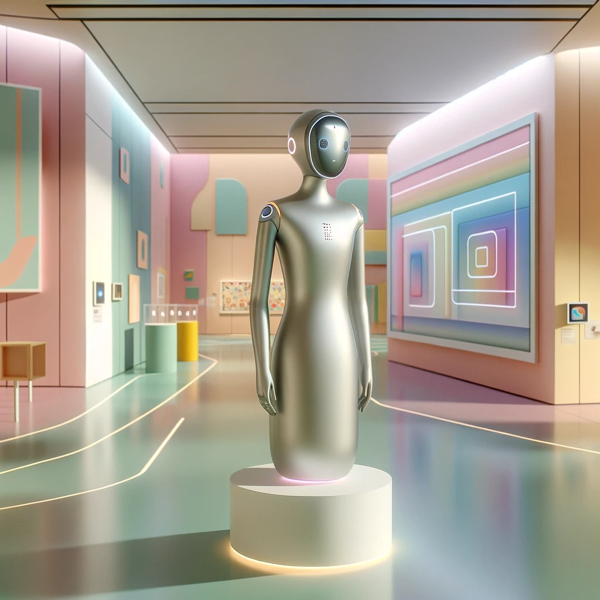

Interactive LLM-powered AI assistant for an exhibition
Oleh Kuznetsov: NI-CCC project, WS 2023/2024

Idea
The main idea behind this project is to bring some interactivity to an exhibition. Since most of the time, exhibitions come with a lot of text, people (especially children) tend to get bored quickly. Because of that, lots of interesting textual information is left unread. This where the idea of an interactive AI assistant comes in. An LLM-powered AI assistant can be used to provide some interactivity to an exhibition:- It can be used to answer questions about the exhibition.
- It can be equipped with Text-to-Speech and Speech-to-Text modules - no need to type and read at all.
- It can roleplay different guide personalities, that brings extra layer of personalization to the exhibituion, (like woman from 60s that guides you through exhibition dresses from the 60s)
Concept of implementation
We are going to need a machine with GPU somewhere around, a display, microphone and speakers. We just need some basic GPU for PoC, if we are going to use some API like OpenAI. After that, we:- connect this module with some knowledge base related to our exhibition
- connect it to TTS and STT modules to provide easy and natural way to interact with the model
- give the assistant a personality that suites the topic of an exhibition
- test the setup to minimize exploit or instability probability